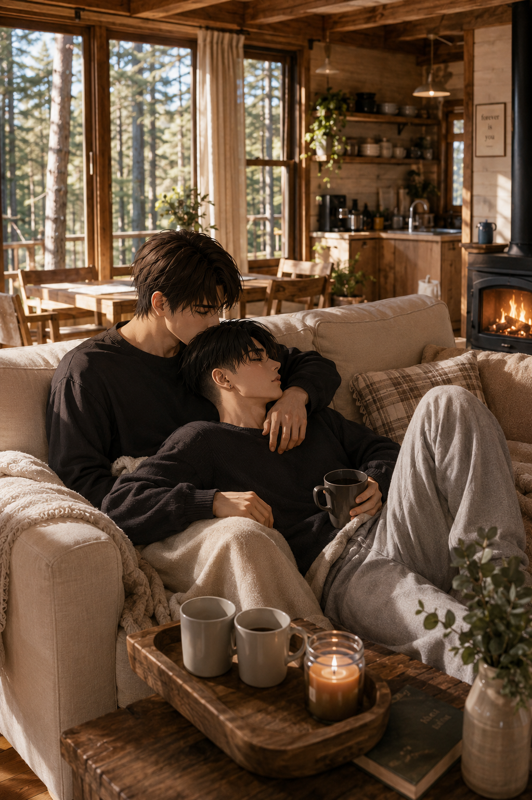

Ubiquitous
Levi — POV

The cabin was quiet in a way Levi appreciated immediately.
Not empty. Not lifeless. Just… steady. The kind of silence that didn’t need to be filled, that didn’t press against him or ask for anything in return. It sat around them, settled into the wood, the low light, the slow rhythm of the place itself.
Eren didn’t seem to notice it the same way.
Or maybe he did — he just didn’t stand still long enough to let it sit.
Levi watched him move through the space like he already belonged there. Jacket dropped without thinking, shoes kicked off somewhere near the door, voice filling the room without hesitation as if the quiet wasn’t something to preserve but something to bend around himself.
This is better than I thought.
Levi set the bag down near the table, slower, more deliberate. His eyes moved once around the room, taking in what mattered and dismissing the rest.
Not bad at all.
Eren laughed softly at that, not even turning.
You like it.
Levi didn’t answer, he didn’t need to. Eren always read it anyway.
By the time the evening settled, the place had warmed just enough to blur the edges of the cold still lingering from outside. The lights stayed low, more out of habit than necessity, casting everything in something softer than daylight ever allowed.
Levi didn’t remember sitting down.
Just the shift from standing to being there — settled into the couch, one leg loosely hooked over Eren’s, his back resting against his chest like it had always been the natural place to end up.
Eren’s hand found him without looking. Fingers slipping into his hair, slow, absent-minded at first, then more deliberate — tracing the line of his undercut, nails barely scratching against his scalp in a way that made Levi’s shoulders drop without him noticing.
He leaned into it.
A glass rested in his hand, tilted slightly as he shifted, the wine catching the light in brief, dull reflections. Eren had one too, though he paid less attention to it, more focused on everything else at once — the movement of Levi under his hand, the way the quiet settled around them, the simple fact of being there.
The plate between them was nothing elaborate. Something easy. Something neither of them had put much thought into beyond the fact that it was enough.
Levi let his head fall back slightly, just enough to rest more fully against Eren, eyes half-lidded, attention drifting somewhere between the warmth of the room and the steady rhythm of Eren’s breathing behind him.
There was no effort in it, no adjustment. Just the quiet certainty of being exactly where he was supposed to be.
Eren shifted slightly behind him, adjusting just enough to reach for his glass again without pulling away. His hand didn’t leave Levi’s hair, fingers still moving in slow, familiar patterns, like he had no intention of stopping anytime soon.
For a while, neither of them said anything.
The quiet held.
Then—
What do you want to do tomorrow?
Levi didn’t answer immediately. Not because he didn’t have one, but because he could already hear where this was going.
You’re choosing.
Eren huffed softly, something between amusement and mild protest.
I always choose.
Levi tilted his head slightly, just enough to glance up at him without fully moving.
Exactly.
That earned him a quiet laugh, warmer this time, closer.
Fine. Then you’re choosing tomorrow.
Levi let the silence stretch for a second longer, like he was considering it, even though he had already made up his mind earlier that day.
There’s a trail not too far from here.
He shifted slightly, adjusting the angle of his glass, voice still low, even.
Loop. Nothing complicated.
Eren didn’t hesitate.
Sounds perfect.
Of course it did.
Levi let himself settle again, more fully this time, the tension he usually carried nowhere to be found in the way his weight rested against him.
Eren’s hand slowed in his hair, fingers drifting lower for a moment, brushing the side of his neck before coming back up, like he couldn’t quite decide where to stay.
Levi reached up without thinking, catching his wrist lightly.
Not to stop him.
Just to hold him there.
Eren stilled for half a second, then leaned down just enough—
Levi turned his head.
It wasn’t rushed.
Not hesitant either.
Just something that happened the moment the distance wasn’t there anymore.
The kiss lingered longer than it needed to, quiet but not soft, the kind that settled instead of asking.
Levi didn’t pull away immediately.
When he did, it was slow, just enough to breathe, his forehead resting briefly against Eren’s before he leaned back again into him.
His fingers were still loosely around Eren’s wrist.
He didn’t let go.
I like it here.
The words came out quieter than the rest. Just… unguarded in a way Levi didn’t offer often.
A pause.
Then, almost as an afterthought—
With you.
Eren blinked once, clearly not expecting that.
Just for a second, something softer passed across his face — surprise, maybe. Or something closer to it.
Look at that…
His voice dipped, teasing already settling back in, the corner of his mouth lifting slightly.
Didn’t think you had it in you. Your heart melts after all—
Levi didn’t let him finish.
He leaned in again, this time without the same restraint.
The kiss landed sharper, deeper — not rushed, but with more intent behind it, something less quiet, less contained.
His fingers tightened slightly against Eren’s wrist as he shifted, angling just enough to press closer, his other hand finding its way to the back of Eren’s neck.
It wasn’t to take control. Just to make a point.
Eren exhaled against him, the faintest hint of a laugh breaking through before it disappeared again, replaced by something heavier as Levi’s mouth moved, slower now, deliberate.
Teeth caught briefly against his lower lip — not enough to hurt, just enough to linger — before Levi pulled back just enough to breathe, only to drop lower without hesitation.
The line of Eren’s jaw. His neck.
Not rushed. Not careless.
Measured in a way that made it worse.
Eren didn’t warn him.
One second Levi was still half-settled against him — the next, the shift was abrupt, solid, familiar hands finding him without hesitation.
He barely had time to react before the weight beneath him disappeared.
Eren stood, pulling him up with him like it was nothing.
Levi didn’t protest.
Didn’t question it either.
His hand slid instinctively against Eren’s shoulder, steadying himself more out of reflex than necessity as he adjusted to the movement.
The room shifted around them — low light, quiet, warmth left behind on the couch —
And then it didn’t matter anymore.
Levi woke up before him, he always did.
Not fully, not in a way that pulled him completely out of the warmth, but enough to notice things — the weight beside him, the steady rise and fall under his hand, the quiet way the light filtered through the curtains.
Eren was still asleep.
Half on his stomach, one arm thrown carelessly across the mattress, hair a mess against the pillow, breathing slow and deep like nothing could reach him there.
Levi watched him for a moment.
Beautiful.
Then he shifted closer.
His hand slid lightly along Eren’s side, fingers dragging just enough to break the stillness without forcing it.
Eren stirred almost immediately, brow twitching, breath catching slightly before settling again.
Levi leaned in, pressing his mouth against his shoulder first — a slow, deliberate kiss, followed by another, lower this time.
That did it.
…you’re awake.
His voice was rough, barely there. Levi always loved it.
Levi hummed softly against his skin, not pulling back.
Then you'll complain I'm not clingy enough.
Eren let out a quiet laugh, still half asleep, shifting onto his back just enough to reach for him blindly.
Levi let himself be pulled in, one hand bracing against the mattress as their mouths met — slower than the night before, softer, but no less certain.
It lingered.
Warm.
Unhurried.
Levi pulled back just enough to breathe, only to drop his head again, this time against Eren’s neck.
Teeth grazed skin — not enough to mark, just enough to feel.
Hey—
There was no real protest in it.
Levi ignored it anyway.
When he finally pulled away, Eren was fully awake, eyes open now, watching him with something quieter than his usual teasing.
Levi didn’t comment.
He just got up.
Like it hadn’t meant anything.
It had.
Eren followed him a few seconds later.
The cabin was colder in the morning, the warmth from the night before already fading into the wood and the air.
Levi didn’t mind.
He moved through the space without hesitation, grabbing what he needed, already half focused on the day ahead.
The shower started running not long after.
Eren joined him without asking. Of course he did.
Levi stood under the water first, letting it run over his shoulders, his back, steady and grounding.
Eren stepped in behind him, close enough to feel immediately, hands settling at his waist without ceremony. Levi tilted his head slightly, just enough to give him space.
That was all the invitation Eren needed.
His touch shifted after a moment — slower, less instinctive. One hand sliding higher along Levi’s ribs, the other pressing more firmly at his hip, pulling him back just a fraction closer.
Levi let it happen.
Leaned into it, barely.
Eren’s mouth found the side of his neck, not rushed, not demanding — just there, warm against his skin, lingering in a way that made the quiet feel heavier, softer at the same time.
Levi’s fingers rested briefly over Eren’s wrist, not to stop him.
Just to anchor him there.
It stayed like that for a while.
Water running. Breath steady. Nothing needing to be said.
Familiar in a way that didn’t need explanation.
He knew he had to control himself, otherwise they would never do anything else than testing their stamina. Levi stepped out first.
Towel wrapped low, movements precise, efficient—
He paused briefly near the door.
Just long enough.
Eren caught it immediately.
You’re staring.
Levi didn’t even bother denying it.
Can’t I check what’s mine now?
That landed exactly the way he expected.
Eren let out a surprised laugh, half incredulous, half pleased, turning just enough to make it worse on purpose.
You’re unbelievable. Just like that ass of yours.
Levi clicked his tongue, unimpressed, but didn’t look away.
Move.
Eren was still smiling when he did.
Levi walked out anyway.
They were ready not long after.
Levi packed without asking.
Food, basics, what they’d need for a few hours out — and two bottles of water.
Eren didn’t notice until they were already outside.
I would’ve taken care of it.
You wouldn’t have brought water.
A pause.
Then—
…fair.
The trail was quiet.
Not empty, just distant enough from everything else to feel like it belonged to them alone.
They walked without rushing, steps falling into rhythm easily, conversations slipping in and out without effort.
Sometimes they talked.
Sometimes they didn’t.
It didn’t matter.
By the time they stopped to eat, the sun had settled higher, warming the ground just enough to make staying there feel natural.
Levi sat first.
Eren followed, close enough that their shoulders brushed without either of them acknowledging it.
It was simple. Enough.
The walk back felt shorter. The cabin welcomed them the same way it had the night before — quiet, steady, unchanged.
The shower came first. Again. This time slower. No rush to move, no need to speak. Just warmth, hands, the quiet kind of closeness that didn’t try to be anything more than what it already was.
By the time evening settled in again, the air outside had cooled enough to make the fire feel necessary.
Eren handled that part.
Of course he did.
Levi stayed close anyway, watching more than helping, arms crossed loosely as the first flames caught.
He had asked earlier, almost offhand—
You can get a fire going, right.
Eren had looked at him like it was the easiest question in the world.
Obviously. I handle you, I can handle a fire.
Levi had shrugged slightly, like it was effectively enough of a proof.
Thought it’d be better. Music, a drink. And a fire.
By the time the flames settled into something steady, the air had cooled just enough to make it worth it.
Eren dropped back onto the bench first, stretching his legs out without much thought.
Levi didn’t sit next to him.
He settled directly on him.
Like it was the obvious choice.
Eren let out a quiet huff of laughter, hands coming up automatically to steady him.
Your place is on my lap, Levi.
Levi didn’t even look back.
See what you've done? That's because you've spoilt me.
He stayed exactly where he was.
One arm hooked loosely behind him, glass in hand, posture relaxed in a way that would have been impossible anywhere else.
Eren adjusted slightly under him, one arm settling around his waist, the other reaching for the bottle they had brought out.
For a moment, it was just that.
Firelight. Low music from the speaker Eren had insisted on bringing. The quiet stretch of night around them.
Then Levi reached behind him, into the bag he had left near the bench.
Eren barely paid attention at first.
Until—
…what’s that.
Levi didn’t answer immediately.
He just pulled it out and dropped it lightly against Eren’s chest.
A small pack.
Marshmallows.
Eren blinked once.
Then looked at him.
You bought these?
Levi took a slow sip of his drink, eyes on the fire.
You talk about it enough.
That was all.
Eren’s grip around him tightened slightly, not enough to pull, just enough to register.
Levi ignored it.
Completely.
He reached for one without looking, skewering it with the stick Eren handed him a second later.
Eren was already leaning forward.
Too close to the fire. Too fast. With absolutely zero patience.
Levi didn’t even have time to comment.
The marshmallow caught almost instantly, flames licking up the side as Eren pulled it back with zero concern.
He didn’t wait.
Blew on it once — barely — and bit into it anyway.
Levi turned his head just enough to watch him.
There it was.
That shift.
The one he’d noticed before — subtle everywhere else, but obvious here.
The way Eren lit up over something as stupid as sweets. The way his voice changed just slightly when he laughed, lighter, unguarded.
It’s hot—
He didn’t stop eating it. Of course he didn’t.
Levi exhaled quietly through his nose, something close to amusement slipping through despite himself.
Blink for me, Eren.
Eren paused just long enough to register it — then laughed, softer this time, like it had landed somewhere deeper than the joke itself. He was already reaching for another one.
Shut up.
Levi shook his head slightly, but didn’t look away this time.
He didn’t rush his own.
Let it sit just far enough from the flame, turning it slowly, controlled, precise —
The opposite of everything Eren was doing.
And still— his attention stayed on him.
It was always like this with Eren. Simple. Easy in a way that didn’t make sense, considering everything else, and yet— never empty.
Every moment held something. Even the quiet ones.
Levi didn’t try to define it anymore.
He just let it exist.
The fire crackled softly in front of them, the night stretching further without asking anything in return.
For once, there was nothing pressing at the edges. No outside noise. No weight waiting to come back.
That could wait.
Levi didn’t look at him when he said it.
You know how much I love you, right.
It wasn’t loud. Not heavy either. Just… there.
Eren stilled under him for a fraction of a second.
Then—
Yeah?
There was a smile in it already. Not mocking. Something warmer.
You’ll show me in a few.
Levi clicked his tongue softly, hiding his smirk.
He didn’t move away.
If anything— he leaned back just a little more.
Of course he would.